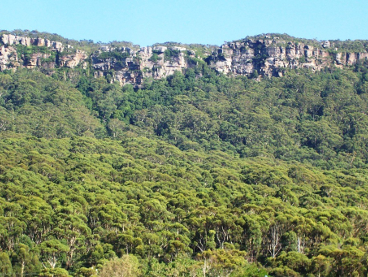
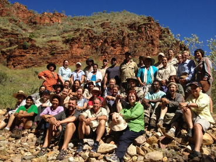
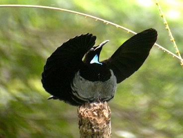
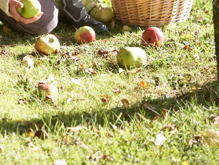

Programs

Leadership development program, Illawara 2015
Are you passionate about making a change on environmental and social justice.
Open for applications

Classic: CSL Fellowship program, Melbourne 2015
A unique opportunity for up to 30 commited individuals who are passionate.
Open for applications - 12 seats left

Intensive: CSL Fellowship program, Melbourne 2015
Grow your capacity to influence others and create positive change.
Closed - Applications open June 3

Short courses, 2015
A short course is comprised of a two-day, action-based learning workshop.
Closed - Applications open August 4
Classic CSL Fellowship program, Melbournee 2016
A transformational learning experience like no other with enviable networking opportunities.
Closed - Applications open 2016